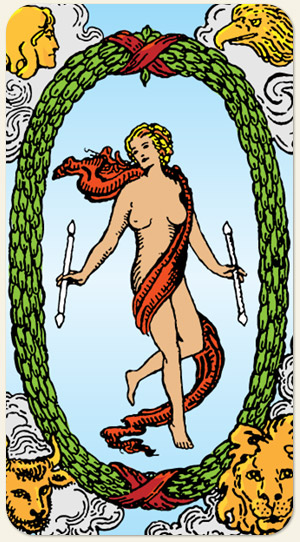

É um ser híbrido, por isso, o tecido cobre o seu sexo, as duas polaridades em um único ser, um ser que possui tudo, já transitou por muitas vidas, é amplo, completo, já viveu de tudo. As quatro figuras ao redor não estão mais na fase de estudo como na Roda da Fortuna, estão maiores no Mundo porque dominaram seus elementos. Na Roda da Fortuna, união dos quatro seres resulta na Esfinge, no Mundo, essa união não resulta em uma Esfinge porque isso representaria um enigma, o Mundo já entendeu o seu Destino. Pentagrama: é o ser que dominou os quatro elementos e alcançou o quinto elemento, estar vivenciando uma realidade fora do que está acostumado.
Realizações, querer fazer parte do mundo do outro, completude, plenitude, pode se tornar o espelho de Ojesed: passar a vida idealizando algo e nunca procurar concretizar. A pessoa mais feliz do mundo olha para o espelho e vê apenas o seu reflexo. Se a pergunta for: está ou não está grávida, a resposta deve ser procurar um médico ou uma farmácia. Porém, o jogo pode indicar se existe energia de gestação.
Positivo: Realização, bênçãos flexibilidade, realidade melhor, êxito, solução, equilíbrio dos elementos.
Negativo: Sentir-se deslocado no mundo, trabalho árduo e improdutivo, querer abraçar o mundo com as pernas, necessidade de adaptação.
Amor e Sexo: Pessoa bem resolvida, amor pelo outro, auto amor, amor incondicional. Dois mundos que não se cruzam, falta de alinhamento. Procurar fora do seu mundo: outros lugares, outras áreas. A pessoa que faz do outro o seu mundo, se sente incompleta sem o outro. A pessoa que faz o pacote completo, orgasmo, são abertas a novas formas de buscar ou proporcionar prazer, fertilidade.
Trabalho e Dinheiro: A pessoa que trabalha com um mundo de coisas, carregar o mundo nas costas, trabalhar fora, no exterior, com magia, manipulação de elementos, invocações, pessoas talentosas, habilidosas, que dominam uma área do conhecimento. Dinheiro aplicado em vários investimentos ou setores, espalhado, aplicado em uma grande ideia, grandes somas, grandes despesas ou grandes dívidas, transformar seu entorno (reforma), encontrar ajuda em alguém do seu mundo.
Espiritualidade: A pessoa que alcança a espiritualidade em um nível de consciência que a permite entender que ela também é espiritualidade. A pessoa não está só, ter o espiritual no seu mundo, seres reencarnando.
Símbolos: Guirlanda de Louros, Fita Vermelha, Bastão, Quatro Seres, Nuvens, Mulher, Nudez.
Cores: Azul, Verde, Vermelho, Roxo.
Elementos: Espírito, Ar, Água, Fogo e Terra.
Referência: Cícifo e o Tártaro. Matrix (filme), na cena em que Neo acorda e vê a plantação humana.